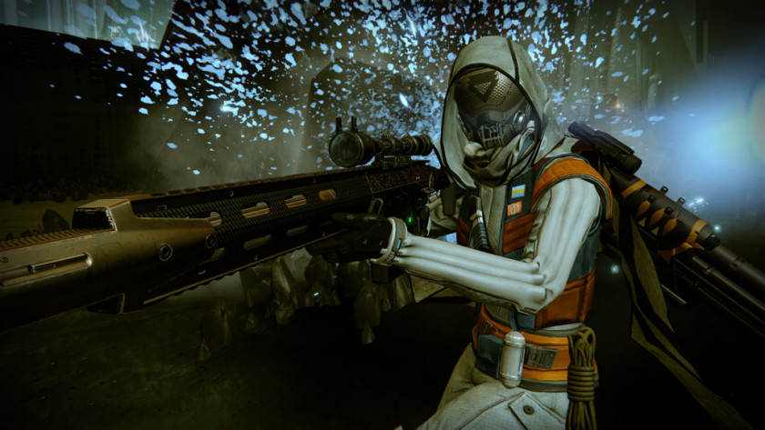

Articulo

Destiny 2 para PC: hasta 4K, soporte 21:9 y sin bloqueo de FPS
En este artículo hemos tenido ocasión de ver un vídeo con juego real de Destiny 2 para PC, la segunda entrega de uno de los mejores juegos de rol de acción en primera persona de la historia, pero Bungie también acaba de dar una buena dosis de información técnica que no debemos pasar por alto. El conocido estudio, creador de la saga Halo, ha confirmado que Destiny 2 para PC soportará resoluciones de hasta 3.840 x 2.160 píxeles, será compatible con monitores en formato ultrapanorámico (21:9) y además no tendrá limitador de tasa de fotogramas por segundo.Una buena noticia, ya que significa que podremos sacarle el máximo partido en casi cualquier tipo de configuración, aunque todavía estamos pendientes de conocer los requisitos mínimos y recomendados que tendrá.Dado que la primera entrega no llegó a PC no tenemos una base sobre la que elaborar una lista de posibles requisitos, pero teniendo en cuenta lo que hemos visto en el tráiler y que se trata de un juego multiplataforma (llegará a Xbox One, PS4 y PC) podemos dejaros una estimación que creemos bastante acertada:Video